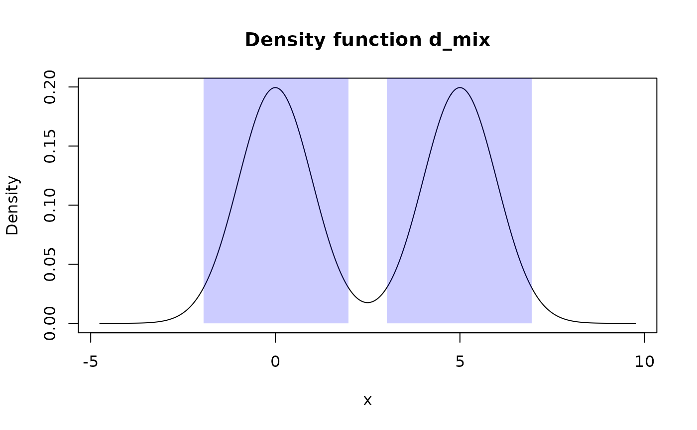

summ_hdr() computes a Highest Density Region (HDR) of some pdqr-function
for a supplied level: a union of (closed) intervals total probability of
which is not less than level and probability/density at any point inside it
is bigger than some threshold (which should be maximum one with a property
of HDR having total probability not less than level). This also represents
a set of intervals with the lowest total width among all sets with total
probability not less than a level.
summ_hdr(f, level = 0.95)| f | A pdqr-function representing distribution. |
|---|---|
| level | A desired lower bound for a total probability of an output set of intervals. |
A data frame with one row representing one closed interval of HDR and the following columns:
left <dbl> : Left end of intervals.
right <dbl> : Right end of intervals.
General algorithm of summ_hdr() consists from two steps:
Find "target height". That is a value of probability/density which
divides all support into two sets: the one with
probability/density not less than target height (it is a desired HDR) and the
other - with strictly less. The first set should also have total probability
not less than level.
Form a HDR as a set of closed intervals.
If f has "discrete" type, target height is computed by looking at "x"
values of "x_tbl" metadata in order of decreasing probability
until their total probability is not less than level. After that, all "x"
values with probability not less than height are considered to form a HDR.
Output is formed as a set of closed intervals (i.e. both edges included)
inside of which lie all HDR "x" elements and others - don't.
If f has "continuous" type, target height is estimated as 1-level
quantile of Y = d_f(X) distribution, where d_f is d-function
corresponding to f (as_d(f) in other words) and X is a random
variable represented by f. Essentially, Y has a distribution of f's
density values and its 1-level quantile is a target height. After that, HDR
is formed as a set of intervals with positive width (if level is more
than 0, see Notes) inside which density is not less than target height.
Notes:
If level is 0, output has one interval of zero width at point of global mode.
If level is 1, output has one interval equal to support.
Computation of target height in case of "continuous" type is approximate
which in some extreme cases (for example, like winsorized
distributions) can lead to HDR having total probability very approximate to
and even slightly lower than level.
If d-function has "plateaus" (consecutive values with equal
probability/density) at computed target height, total probability of HDR can
be considerably bigger than level (see examples). However, this aligns with
HDR definition, as density values should be not less than target height
and total probability should be not less than level.
region_*() family of functions for working with output
HDR.
summ_interval() for computing of single interval summary of distribution.
Other summary functions: summ_center,
summ_classmetric,
summ_distance, summ_entropy,
summ_interval, summ_moment,
summ_order, summ_prob_true,
summ_pval, summ_quantile,
summ_roc, summ_separation,
summ_spread
# "discrete" functions
d_dis <- new_d(data.frame(x = 1:4, prob = c(0.4, 0.2, 0.3, 0.1)), "discrete")
summ_hdr(d_dis, 0.3)#> left right
#> 1 1 1summ_hdr(d_dis, 0.5)#> left right
#> 1 1 1
#> 2 3 3summ_hdr(d_dis, 0.9)#> left right
#> 1 1 3 # Zero width interval at global mode
summ_hdr(d_dis, 0)#> left right
#> 1 1 1#> left right
#> 1 -1.960312 1.960312 # Zero width interval at global mode
summ_hdr(d_norm, 0)#> left right
#> 1 -2.904343e-12 -2.904343e-12
# Works well with mixture distributions
d_mix <- form_mix(list(as_d(dnorm), as_d(dnorm, mean = 5)))
summ_hdr(d_mix, 0.95)#> left right
#> 1 -1.943712 1.980277
#> 2 3.019723 6.943712
# Plateaus
d_unif <- as_d(dunif)
# Returns all support because of density "plateau"
summ_hdr(d_unif, 0.1)#> left right
#> 1 0 1